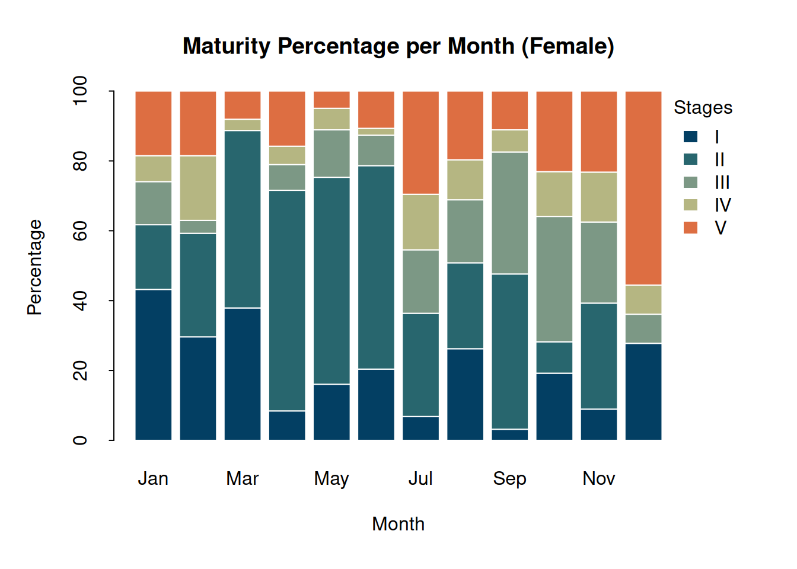
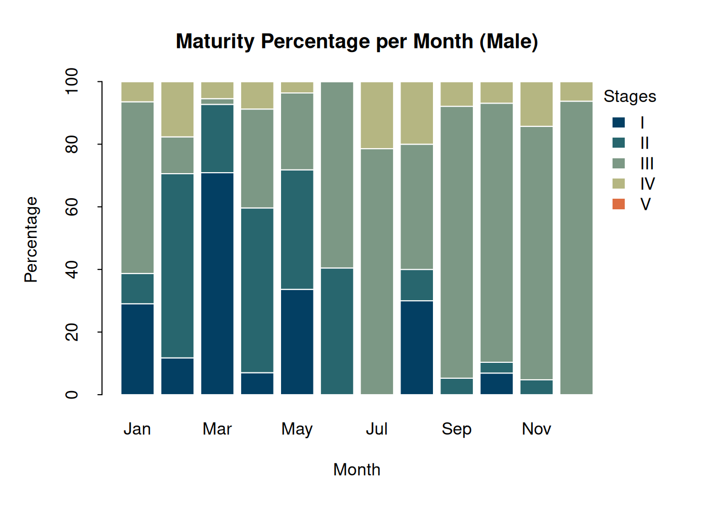

# Load the data.table package
library(data.table)
# Import the data
speciesx <- fread("reproductive-biology-data.csv")Visualizing fish gonadal stages with R
Introduction
This tutorial continues from the previous one on conducting a reproductive biology study of fish stocks, which can be found here. In this session, we focus on plotting gonadal stages using the same dataset discussed earlier.
Analyzing gonadal maturity stages of fish is fundamental for effective fisheries management, sustainable utilization of fishery resources, understanding fish biology, and supporting conservation efforts, particularly, for marine ecosystems.
Data checking
Before proceeding to processing and analysis, we need to check the structure of the data (see the explanation from the previous tutorial):
str(speciesx)We need a new column that contains the sampling date (in this case the column name is sdate), but the day must be changed into “1,” which we will see later its use in the aggregation of data and in plotting. The code below is similar to this: speciesx$sdate <- paste(speciesx$year, speciesx$month, 1, sep = "-").
speciesx[, sdate := paste(year, month, 1, sep = "-")]Then convert this column (sdate) to a date format. Converting data from character to date format is essential for accurate analysis, consistent representation, and integration with various analytical and visualization tools. To do this, we can use the as.Date() function. This function is essential for working with date data, as it allows you to transform character representations of dates into a format that R recognizes as dates, facilitating further analysis and manipulation.
speciesx[, sdate := as.Date(sdate, format = "%Y-%B-%e")]The format is a character string specifying the format of the input date. In this case, the format is: “%Y” is year with century; “%B” is the full month name in the current locale; and “%e” is the day of the month as decimal number (1–31). This format may change depending on the data you have. To learn more about the format, you can search the help page (??strptime).
Running again the str() function in our data, we can see that the sdate column is now a date format.
The next step is to convert the ‘maturity’ column from character to factor sing the factor() function.
unique(speciesx$maturity)speciesx[, maturity := factor(
maturity,
levels = c("I", "II", "III", "IV", "V"),
labels = c("I", "II", "III", "IV", "V")
)]Now that we are done with the data processing, we will now proceed to data preparation.
Data preparation
Let’s establish the color palette required for our data visualization. A carefully chosen color palette plays a crucial role in ensuring that our visualizations are both visually appealing and effective in conveying information. By defining a suitable color palette, we can enhance the clarity and impact of our visualizations, making it easier for viewers to interpret and engage with the data. We will save this color palette to a variable named mycol.
mycol <- c("#033f63", "#28666e", "#7c9885", "#b5b682", "#dd6e42")To create informative and concise labels for the x-axis of our plot, we will generate a sequence of dates and convert them into abbreviated month names. This will enhance the readability of the plot by providing a clear timeline.
First, we will generate a sequence of dates starting from January 1, 2017, to December 1, 2017, with a monthly interval. Then, we will convert these dates into abbreviated month names to use as labels on the x-axis.
xlab_dates <- seq(as.Date("2017-01-01"), as.Date("2017-12-01"), "1 month")
xlab_dates <- months(as.Date(xlab_dates), abbreviate = TRUE)In order to analyze the gonadal stages per month and sex, it is crucial to focus on specific columns from the dataset that contain the core information necessary for this analysis. We will select the columns sdate, maturity, and sex from our dataset, as these contain the date of sampling, maturity stage, and sex of the specimens, respectively. By isolating these columns, we streamline the dataset to include only the relevant information needed for our analysis.
We will store this subset of the dataset in a new variable named sstage.
sstage <- speciesx[, list(sdate, maturity, sex)]To understand the distribution of maturity stages over time, we need to aggregate the data by the sdate column and count the number of occurrences of each maturity stage for each date. This step will provide insights into the temporal patterns of maturity stages across different dates.
We will group the data by sdate, maturity, and sex, and then count the number of occurrences for each combination. The resulting dataset will help us analyze trends and patterns in the maturity stages over time.
sstage <- sstage[, list(n = .N), by = list(sdate, maturity, sex)]Breakdown of the code above:
sstage[, list(n = .N), by = list(sdate, maturity, sex)]: Groups the data bysdate,maturity, andsex, and counts the number of occurrences (.N) for each combination.n = .N: Creates a new columnnthat contains the number of occurrences for each group.
After aggregating the data, it is important to sort the sdate column in chronological order. This step ensures that the data is organized by time, facilitating easy inspection and interpretation of temporal trends in the dataset. Sorting by date is essential for time-series analysis and for creating plots that accurately reflect the progression of events over time.
sstage <- sstage[order(as.Date(sdate)), ]As we can see, we don’t have all the dates and the maturity stages. In this scenario, we will use the CJ() function of the data.table package to repopulate the missing data. This function stands for “Cross Join.” It’s used to perform a Cartesian join, creating a new data.table that combines all possible combinations of the unique values from the specified columns.
sstage <-
sstage[CJ(sdate = sdate,
maturity = maturity,
sex = sex,
unique = TRUE), on = list(sdate, maturity, sex)]To ensure accurate data representation, replace all NA values in the n column of the sstage data frame with zero. This prevents issues during analysis and plotting, where NA values might cause errors or be misrepresented.
sstage[is.na(n), n := 0]To perform gender-specific analysis, subset the data frame into female and male data. Start by creating a new data frame containing only the female data.
sstagef <- sstage[sex == "F", ]Since the sex column is no longer needed (as we are only working with females), remove it to clean up the data frame.
sstagef[, sex := NULL]Use the dcast() function to reshape the data. This will organize the data such that each row represents a different maturity stage, and each column represents a different sampling date. The value.var parameter specifies that the values in the n column should be spread across the new columns. In simpler terms, this modifies the sstagef data frame so that each row represents a different maturity stage and each column represents a different sampling date. The values in the cells come from the n column, which contains the counts.
sstagef <- dcast(sstagef, maturity ~ sdate, value.var = "n")The maturity column is no longer needed in the matrix, so remove it.
sstagef[, maturity := NULL]Convert the data frame to a numeric matrix. Each element of the matrix corresponds to a value in the original data frame sstagef. The resulting matrix has the same number of rows as sstagef and each row of the matrix represents one row from the original data frame. This format is more suitable for subsequent calculations and plotting.
sstagef <- matrix(as.numeric(unlist(sstagef)), nrow = nrow(sstagef))Assign the maturity stages as row names for better readability and reference. Each row in the matrix will be labeled with one of the strings “I”, “II”, “III”, “IV”, or “V”, corresponding to different maturity stages. These labels provide a clear and categorical identification for each row of data in the matrix.
rownames(sstagef) <- c("I", "II", "III", "IV", "V")Use the dates stored in xlab_dates as the column names of the matrix. This provides a clear reference for each sampling date. Additionally, by setting the column names to these dates, it becomes easier to automatically add labels with months on the x-axis of the barplot, enhancing the readability of the plot.
colnames(sstagef) <- as.character(xlab_dates)To prepare for a proportion stacked bar chart, convert the actual values in the matrix to percentages. This ensures each column sums to 100%, representing the proportion of each maturity stage at each sampling date.
sstagef <- apply(sstagef, 2, function(x){x * 100 / sum(x, na.rm = TRUE)})The steps to prepare the male data are similar to those used for the female data. We’ll follow the same procedure to ensure consistency and comparability between the two datasets. Below is the code to process the male data:
# Step 1: Separate data into males
sstagem <- sstage[sex == "M", ]
# Step 2: Remove unnecessary columns
sstagem[, sex := NULL]
# Step 3: Convert data from long to wide format
sstagem <- dcast(sstagem, maturity ~ sdate, value.var = "n")
# Step 4: Remove the maturity column
sstagem[, maturity := NULL]
# Step 5: Convert to matrix
sstagem <- matrix(as.numeric(unlist(sstagem)), nrow = nrow(sstagem))
# Step 6: Add row names to the matrix
rownames(sstagem) <- c("I", "II", "III", "IV", "V")
# Step 7: Add column names
colnames(sstagem) <- as.character(xlab_dates)
# Step 8: Convert values to percentages
sstagem <- apply(sstagem, 2, function(x) { x * 100 / sum(x, na.rm = TRUE) })Data visualization
The data preparations above resulted into a matrix that is appropriate to make a percent stacked bar chart. Percent stacked bar chart is an effective and informative way to visualize the monthly distribution of gonadal stages in fish, allowing for easy interpretation of relative proportions and trends over time.
For female
par(mar = c(5, 4, 4, 5), oma = c(0.5, 1, 0, 0), xpd = TRUE)
barplot(sstagef,
beside = FALSE,
col = mycol,
border = "white",
main = "Maturity Percentage per Month (Female)",
ylab = "Percentage",
xlab = "Month",
tcl = -0.2)
legend("topright", inset = c(-0.1, 0),
legend = rownames(sstagef), fill = mycol, col = mycol,
bty = "n", border = NA, title = "Stages")
For male
par(mar = c(5, 4, 4, 5), oma = c(0.5, 1, 0, 0), xpd = TRUE)
barplot(sstagem,
beside = FALSE,
col = mycol,
border = "white",
main = "Maturity Percentage per Month (Male)",
ylab = "Percentage",
xlab = "Month",
tcl = -0.2)
legend("topright", inset = c(-0.1, 0),
legend = rownames(sstagem), fill = mycol, col = mycol,
bty = "n", border = NA, title = "Stages")
What insights can you derive from these results?
Conclusion
By converting the counts to percentages and plotting the data, you can effectively track and compare the gonadal development stages of females and males over time. This analysis is crucial for understanding the reproductive cycles, timing of maturity, and potential spawning periods, which are vital for effective management and conservation of the species.
I hope you enjoyed and learned from this short tutorial. See you next time!